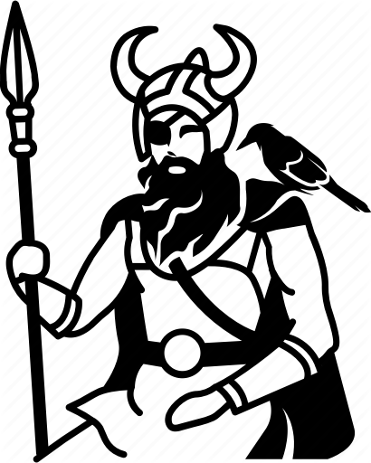

 Odin appears as a prominent god throughout the recorded history of Europe, from the Roman occupation of regions of Germania (from c. 12 BCE) through the tribal expansions of the Migration Period (4th to 6th centuries CE) and the Viking Age (8th to 1 1th centuries CE). In the modern period the rural folklore of Germanic Europe continued to acknowledge Odin. References to him appear in place names throughout regions historically inhabited by the ancient Germanic peoples, and the day of the week Wednesday bears his name in many Germanic languages, including in English.